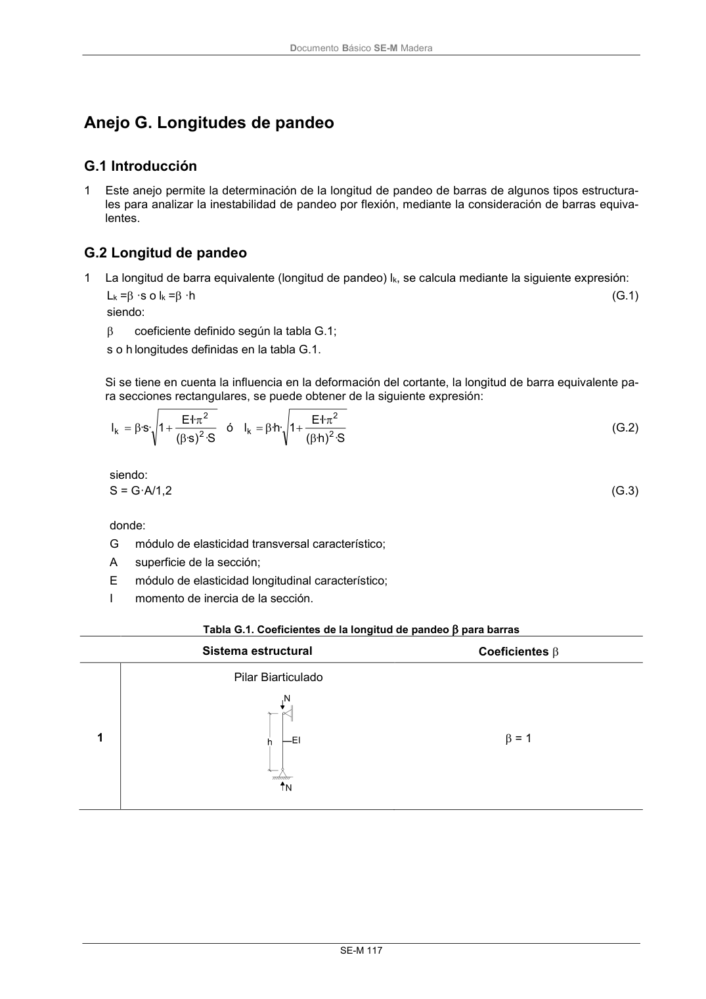

DB-SE-M Madera · edición 2019-12-20 · capa oficial
Documento DB-SE-M-oficial · SHA-256 del PDF 26b5819839ebfda78b0b119c5e76a0a37773b0d763c05688541870075df93718
Página física 123 de 132.
Copia fiel del PDF fuente · Fuente oficial
Ficha de la disposición en la fuente oficial
Formato: Texto de la página (Markdown)
Documento Básico SE-M Madera SE-M 117 Anejo G. Longitudes de pandeo G.1 Introducción 1 Este anejo permite la determinación de la longitud de pandeo de barras de algunos tipos estructura- les para analizar la inestabilidad de pandeo por flexión, mediante la consideración de barras equiva- lentes. G.2 Longitud de pandeo 1 La longitud de barra equivalente (longitud de pandeo) lk, se calcula mediante la siguiente expresión: Lk = ·s o lk = ·h (G.1) siendo: coeficiente definido según la tabla G.1; s o h longitudes definidas en la tabla G.1. Si se tiene en cuenta la influencia en la deformación del cortante, la longitud de barra equivalente pa- ra secciones rectangulares, se puede obtener de la siguiente expresión: S · ) s· ( ·I· E 1 ·s· l 2 2 k ó S · ) h· ( ·I· E 1 · h· l 2 2 k (G.2) siendo: S = G·A/1,2 (G.3) donde: G módulo de elasticidad transversal característico; A superficie de la sección; E módulo de elasticidad longitudinal característico; I momento de inercia de la sección. Tabla G.1. Coeficientes de la longitud de pandeo para barras Sistema estructural Coeficientes 1 Pilar Biarticulado = 1

Datos candidatos: compruebe celdas y notas en el PDF.